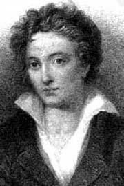
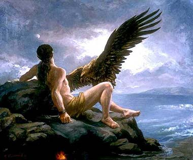

Texto de
Susana
Lopes de Alexandria
Picard
cita Shelley para Armus

|
 No episdio "Skin of Evil" deparamos com Armus, uma criatura feita de puro mal, que pratica atos malvolos (inclusive a morte de Tasha Yar) apenas por sadismo. Mesmo assim, o capito Picard tenta conversar racionalmente com a criatura e at cita Shelley (ilustrao) em seus argumentos, dizendo que "todos os espritos que servem a coisas ms so escravizados" ("All spirits are enslaved which serve things evil").Este verso foi tirado do poema "Prometeu Desacorrentado" (Prometheus Unbound), escrito por Percy Bysshe Shelley (1792-1822), um dos mais representativos poetas do Romantismo ingls. "Prometeu Desacorrentado", publicado em 1820, um drama lrico em quatro atos, fruto dos estudos de Shelley sobre os poetas gregos. De acordo com a Bblia, Ado e Eva foram feitos por Deus sua imagem e semelhana. Os gregos antigos tinham sua prpria explicao para o surgimento do homem. Segundo a mitologia grega, Prometeu foi o deus criador do primeiro homem (tambm feito de barro) e da civilizao humana. Os primeiros homens vieram ao mundo nus, indefesos e sem armas. Alimentando-se apenas de frutas e carnes sangrentas, cobrindo-se apenas de folhagens, ignoravam os benefcios do fogo. Tomado de piedade por sua misria, Prometeu resolveu dar-lhes o fogo e ensinar-lhes a arte dos metais, para que pudessem viver melhor, forjar armas e defender-se das feras. Prometeu ento roubou uma centelha de fogo de Hefestos (deus do fogo e da metalurgia), enquanto ele fundia os metais, e a deu como oferenda aos homens. A humanidade desde ento conheceu, com o fogo, a felicidade de viver melhor, de comer um alimento menos selvagem, de aquecer-se e de receber a luz. Mas a alegria era tamanha que os homens julgaram-se iguais aos deuses. Zeus, o deus maior da mitologia grega, no querendo que os homens ultrapassassem seus limites, resolveu castigar Prometeu, cujo roubo fora a causa da presuno humana. Transportou Prometeu para o mais alto cume do Cucaso e mandou Hefestos acorrent-lo e preg-lo a um rochedo. Contra sua vontade, o divino ferreiro obedeceu, passando os anis de uma inquebrvel corrente aos ps e aos braos do infeliz Prometeu, fixando-os solidamente ao rochedo. Para piorar a situao, todas as manhs uma guia vinha comer-lhe um pedao do fgado. noite, o fgado do pobre Prometeu se refazia, apenas para ser devorado pela guia novamente na manh seguinte (veja ilustrao abaixo). Esse suplcio deveria ter durado mil anos, mas ao fim de trinta anos Zeus perdoou o culpado. Quanto aos homens, para castigar sua falta de comedimento no uso do fogo, Zeus os engoliu sob as ondas do dilvio. O mito de Prometeu rendeu uma pea teatral, a tragdia "Prometeu Acorrentado", escrita pelo poeta grego squilo (525-456 a.C.), considerado o pai da tragdia grega. Entretanto, "Prometeu Desacorrentado", o poema citado por Picard, que Shelley escreveu mais de dois mil anos depois, embora inspirado em squilo, em nada lembra uma tragdia grega. um poema lrico sobre a perfeio moral do homem. Utilizando elementos do mito de Prometeu, Shelley defende em seu poema a teoria de que o mal no inerente ao homem e no foi criado junto com ele, mas sim um acidente que pode ser expulso. Shelley acreditava que o mal desapareceria se a humanidade realmente assim desejasse. Com certeza, o roteirista do episdio "Skin of Evil" (literalmente, "Pele do Mal") leu o poema de Shelley, apropriou-se dessa idia e levou-a s ltimas conseqncias. Ou seja, fez com que toda uma raa conseguisse livrar-se do mal, depositando os seus pecados naquela criatura, que depois seria abandonada no planeta.  |